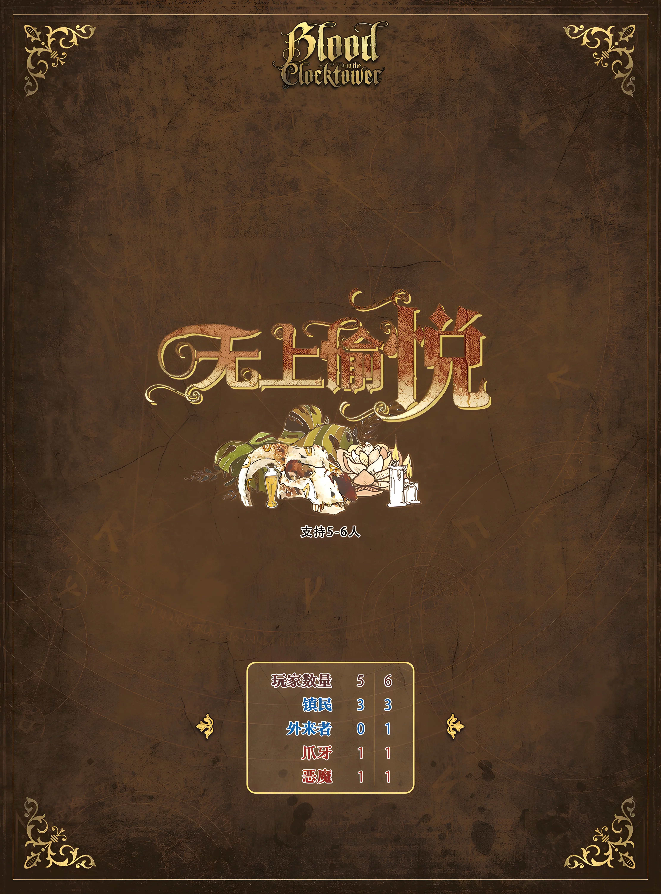
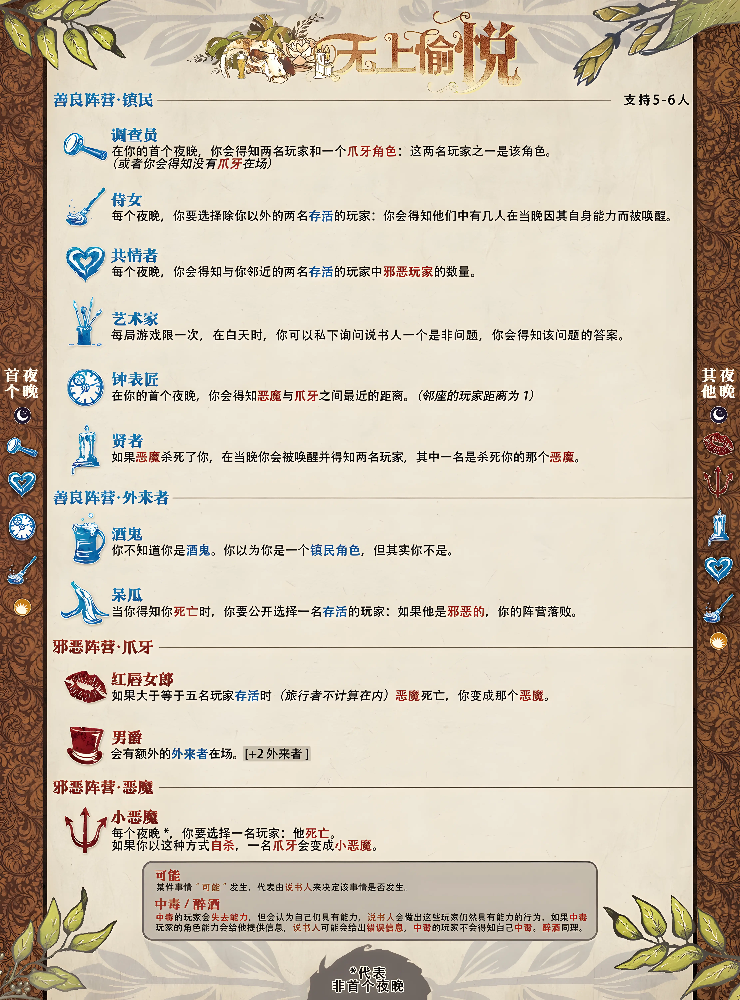

无名村的夜晚，总是安静得令人不安。 月光洒落在荒废的田野上，远处的树林随着寒风发出低沉的呜咽。 村口那条泥泞的小路上，一个陌生的身影缓缓走来。 他没有行李，没有归处，也没有人知道他的名字。 村民们隔着窗户窥视着这个突然出现的旅人。 他们不知道这个人的过去，也不知道他为何来到这里。 但他们知道—— 陌生人从不会无缘无故出现。 当谎言开始流传，当秘密逐渐浮出水面…… 究竟是谁带来了灾厄？ 又是谁，早已隐藏在人群之中？ 欢迎来到《无上愉悦》。

